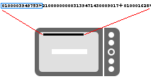
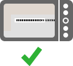
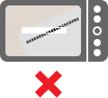

On the top of the screen you see which part of the code row is required.

ESR Scanner continuously scans a square region shown on your screen -- just line up the phone so at least the required part of the code row is completely inside the viewfinder rectangle:
 
You can always try to scan the complete code row at once.
When at least one part of the code row is read, a beep sound will play and you'll see the results of the scan or which code row part is next. The result shows at least the account number and the reference number. If amount was not saved in the code row you have to fill it by your self. To follow the payment it's recommend to fill also the address. Once you saved an address it will automatically load next time you scan a payment for the same account.
If you're having trouble scanning, make sure to hold the phone steady. If the camera is unable to focus, try moving the phone further or closer from the code row or use macro focus (changeable in settings).
IMPORTANT:Please verify always the scanned values. ESR Scanner validates each checksum. How ever errors are possible!